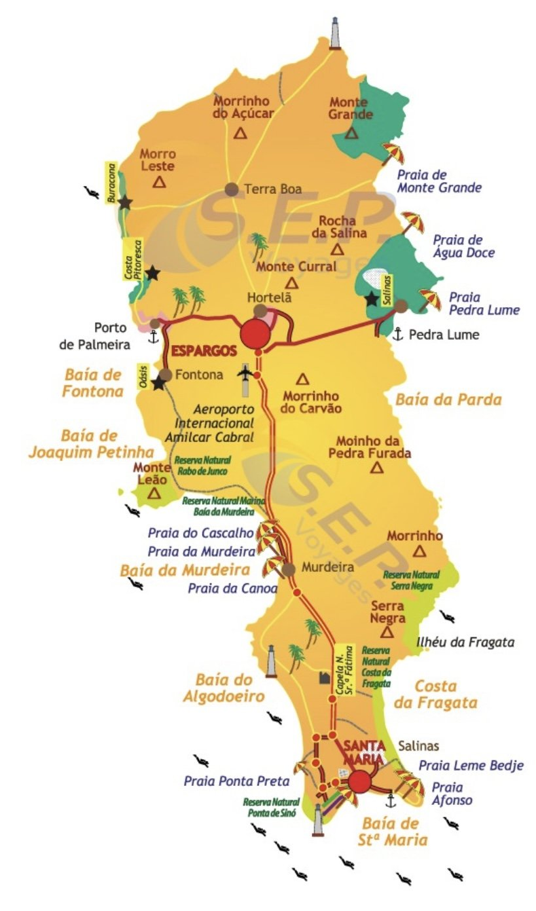

Plan de l’île de Sal

Toucher le plan pour l’agrandir
LE SUD : SANTA MARIA, NOTRE BASE
Santa Maria, tout au sud : le logement, la plage, le ponton, les restos et les bars, tout à pied
Praia Antonio de Sousa (Angulo) à l’est du centre, les hôtels à l’ouest
Praia Ponta Preta, à l’ouest : le coucher de soleil du jeudi
Baia do Algodoeiro : le Bikini Beach Club (brunch du dimanche, White Party du vendredi)
Ponta de Sino, la pointe sud et son phare, réservé naturelle
Praia Antonio de Sousa (Angulo) à l’est du centre, les hôtels à l’ouest
Praia Ponta Preta, à l’ouest : le coucher de soleil du jeudi
Baia do Algodoeiro : le Bikini Beach Club (brunch du dimanche, White Party du vendredi)
Ponta de Sino, la pointe sud et son phare, réservé naturelle
LE CENTRE : ESPARGOS ET L’AÉROPORT
Aéroport Amilcar Cabral : arrivée et départ, à 18 km de Santa Maria
Espargos : la vraie ville de l’île, traversée pendant le tour du nord (mardi)
La seule grande route goudronnée relie Santa Maria, l’aéroport et Espargos
Espargos : la vraie ville de l’île, traversée pendant le tour du nord (mardi)
La seule grande route goudronnée relie Santa Maria, l’aéroport et Espargos
L’OUEST ET LE NORD-OUEST
Porto de Palmeira : le port de pêche, déjeuner au Gata Fish (mardi)
Buracona et l’Oeil Bleu, au nord de Palmeira : piscines dans la lave (mardi, piste)
Monte Leão (la tête de lion) : arrêt baignade de certaines croisières en catamaran
Baia da Murdeira : plages calmes et réservé marine
Buracona et l’Oeil Bleu, au nord de Palmeira : piscines dans la lave (mardi, piste)
Monte Leão (la tête de lion) : arrêt baignade de certaines croisières en catamaran
Baia da Murdeira : plages calmes et réservé marine
L’EST : PEDRA DE LUME ET SHARK BAY
Salinas de Pedra de Lume : le lac salé dans le cratère (mardi après-midi)
Port de Pedra de Lume : Area Docas, poisson face aux salines (idée de déjeuner)
Baia da Parda, au sud de Pedra de Lume : Shark Bay et les requins citrons (mardi, piste)
Costa da Fragata, plus au sud : côte sauvage et réservé naturelle
Port de Pedra de Lume : Area Docas, poisson face aux salines (idée de déjeuner)
Baia da Parda, au sud de Pedra de Lume : Shark Bay et les requins citrons (mardi, piste)
Costa da Fragata, plus au sud : côte sauvage et réservé naturelle
TEMPS DE TRAJET EN TAXI DEPUIS SANTA MARIA
Ponta Preta ou Bikini Beach : ~10 min
Aéroport : 20 à 25 min - Espargos : ~25 min
Pedra de Lume ou Shark Bay : 25 à 30 min - Palmeira : ~35 min
Buracona : ~45 min, fin en piste, chauffeur en 4x4
Nuit noire vers 18h30 en novembre : rentrer des pistes avant
Aéroport : 20 à 25 min - Espargos : ~25 min
Pedra de Lume ou Shark Bay : 25 à 30 min - Palmeira : ~35 min
Buracona : ~45 min, fin en piste, chauffeur en 4x4
Nuit noire vers 18h30 en novembre : rentrer des pistes avant
REPÉRÉS
Sal mesure environ 30 km du nord au sud et 12 km d’est en ouest
Île plate et désertique, alizés forts en novembre, surtout côte est
Coucher du soleil vers 17h58 à la mi-novembre
Île plate et désertique, alizés forts en novembre, surtout côte est
Coucher du soleil vers 17h58 à la mi-novembre